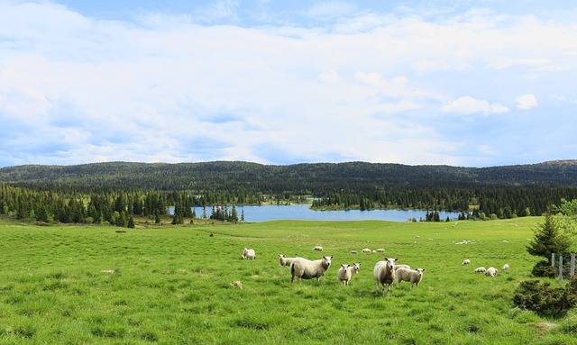
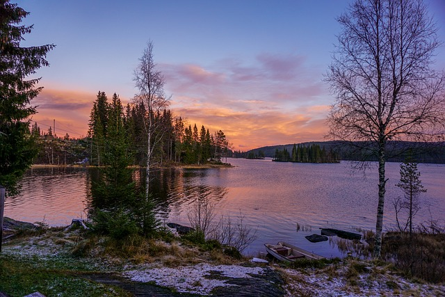
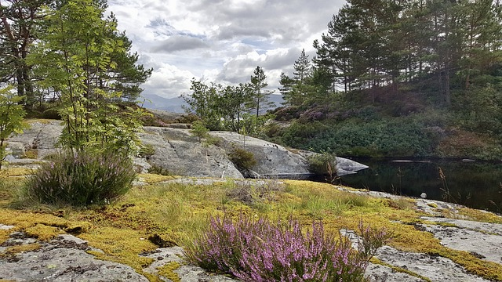
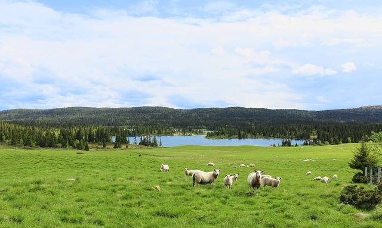
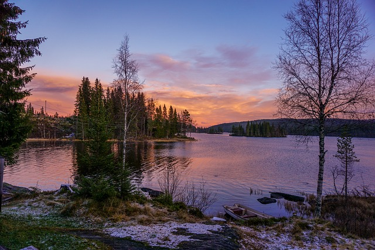
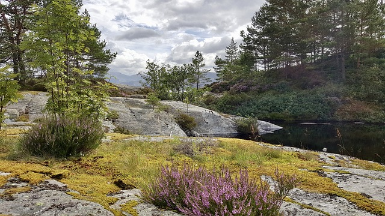

2021, juli. Sammenhengende tur 1 av 3. Av Isak Isakvik Isaksen.
Nordmarka, Sognsvann.
April - September.
Enkel. Flatt terreng. 60 min.
Gå. (Sykle, padle)
 






Dette er test-beskrivelse for en tur. Området eller turen starter på Søndre Sandås og slutter på samme sted. Dette er en gåtur som egner seg best om våren til høsten.
T-bane til endestasjonen for 5 Sognsvann. Bil til parkeringsområdet ved Sognsvann.
2021, juli, sognsvann, sommer, vår, høst, vann, innsjø, t-bane, parkering, gå
Del kartvisningen
Markakartet
Lagbeskrivelser
Kartlagene er tilgjengelige under siden "Kart". Lagene er delt inn i seks grupper beskrevet nedenfor.
Disse lagene inneholder verdier som primært er knyttet til friluftsliv og opplevelser.
Disse kartlagene inneholder informasjon om NOAs forslag til forvaltingstiltak som ikke handler om vern. Områder hvor opplevelses- og naturverdier er skadet kan restaureres. Ved å restaurere områder kan verdifulle områder bli knyttet sammen.
Disse lagene inneholder NOAs forslag til hvilke områder som bør vernes.
Disse lagene inneholder oppdatert informasjon om hvilke områder som er vernet i Norge. Disse kartlagene ajourføres av Miljødirektoratet.
Dette kartlaget inneholder figurer, for eksempel sirkler, lagt til av brukere.
Bakgrunnskartlagene er heldekkende kartlag som er ment å brukes for referanse.
Her er link til informasjon om de tjenestene som allerede er lagt inn:
Siden bakgrunnskartene er heldekkende er det kun mulig å ha ett aktivt bakgrunnskart om gangen. Dette er gjort for å hindre unødig mye bruk av tjenestene.
Om Markakartet
Markakartet er Naturvernforbundet i Oslo og Akershus sin nettløsning for å dele informasjon om verdifulle områder i Oslomarka.
Markakartet lagrer ingen data om deg som bruker. Kildekoden er åpen for inspeksjon her (ny fane).
Tjenesten er utviklet med økonomisk tilskudd fra Kommunal- og moderniseringsdepartementet (KMD) gjennom kompetansetiltak innen plan, kart og geodata.
Takk til interaksjonsdesigner Trine Lise Lindahl for kartlegging av brukerbehov og flotte designdokumenter.
Markakartet er skrevet i javascript og bruker følgende biblioteker:
Markakartet er et open-sourceprosjekt (GPL v3.0) laget av Anders Johan Konnestad (Konnestad Consulting). Videreutviklet av Erlend Kyrkjerud Hårtveit.
Støtt arbeidet vårt!
Norsk natur er under press og det er ressurskrevende å bevare de gjenværede skogene i marka. Bidrag til Naturvernforbundets arbeid blir høyt verdsatt.
For mer informasjon om medlemskap klikk her (ny fane).
Gi pengegave til NOAs Vipps-nummer: #81134